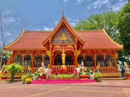

ຍ້ອນກັບ
I.ແຫຼ່ງທ່ອງທ່ຽງ ວັດສີເມືອງ.
👉👻ວັດສີເມືອງ ຫໍຫຼັກເມືອງ

👉ເປັນສະຖານທີ່ຕັ້ງຂອງເສົາຫລັກເມືອງຂອງນະຄອນຫລວງວຽງຈັນເຊິ່ງມີອາຍຸຫລາຍຮ້ອຍປີມາແລ້ວ
ນັກທ່ອງທ່ຽວພາຍໃນແລະຕ່າງປະເທດ ຕ່າງກໍ່ພາກັນມາຂໍພອນ ນຳເຈົ້າແມ່ນສີເມືອງຜູ້ປົກປັກຮັກສາຫໍຫລັກເມືອງແຫ່ງນີ້
ສິ່ງທີ່ເອົາມາບູຊາເຊັ່ນ:ຫມາກເບັງ,ທູບ,ທຽນ,ຫມາກໄມ້ມົງຄຸນຕ່າງໆ ບໍ່ວ່າຈະເປັນກ້ວຍ,ຫມາກພ້າວໆລໆ.
.ເລື່ອງທີ່ມາຂໍພອນສ່ວນຫລາຍຈະເປັນຫນ້າວຽກການງານ,ໂຊກຫລາບ…
ກົດບ່ອນນີ້ເພື່ອກັບຄືນ